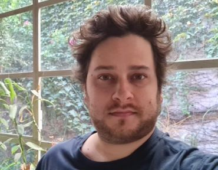
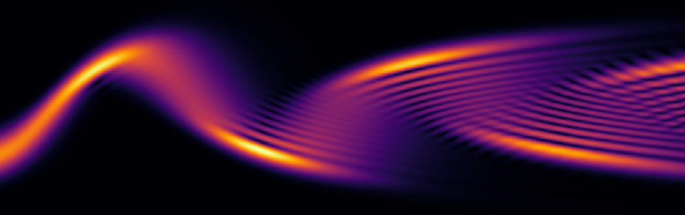
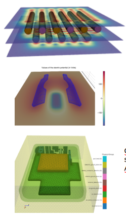
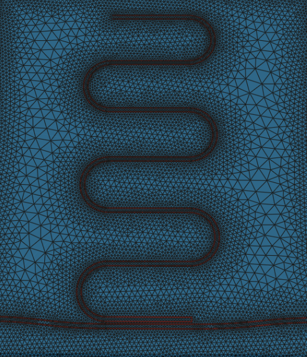

Dr. en Ciencias Matemáticas, UBA
Profesor Adjunto, Departamento de Matemática de Exactas-UBA
Investigador Adjunto , CONICET
Lugar de trabajo: Instituto de Matemática Alberto Santaló (IMAS), UBA-CONICET


Si te interesa realizar tu tesis de licenciatura en alguno de los siguientes temas, no dudes en contactarme para más información.
Referencias:


Martín Maas
martin.d.maas@gmail.com
Página personal de Martín Maas: investigación, proyectos, software, docencia, etc.